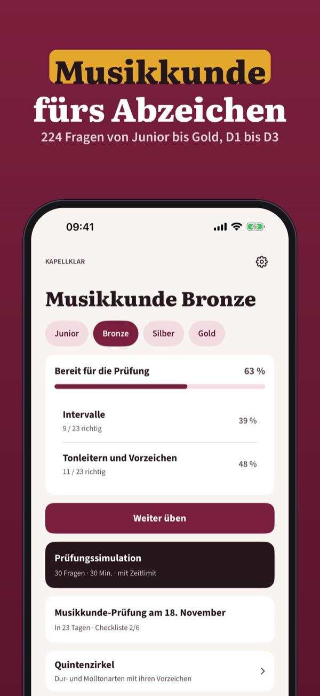
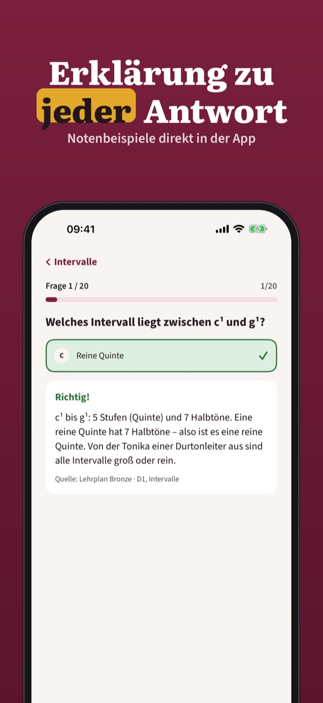
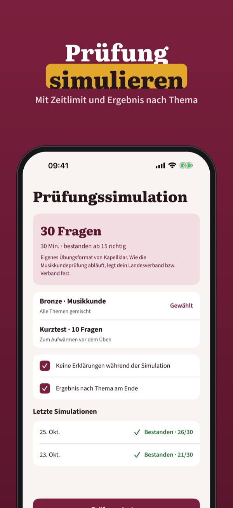

Leistungsabzeichen und D1–D3
Übe die Musikkunde für dein Leistungsabzeichen: eigene Fragen von Junior bis Gold und D1 bis D3, Prüfungssimulation und Erklärungen – offline.



Kapellklar hilft dir, die Theorie für das Leistungsabzeichen in der Blasmusik zu üben – Noten, Intervalle, Tonleitern, Rhythmus, Akkorde und Instrumentenkunde, mit einer Erklärung zu jeder Antwort.
20 Fragen, die Begriffe, den Quintenzirkel und den Prüfungstag kannst du ohne Kauf nutzen. Die Vollversion ist ein Einmalkauf und schaltet alle Fragen, Simulationen und die Statistik frei. Kein Abo.
Die Prüfungssimulation ist ein eigenes Übungsformat; wie deine Musikkundeprüfung abläuft, legt dein Landesverband bzw. Verband fest.
Kapellklar ist unabhängig und nicht mit dem Österreichischen Blasmusikverband, der Österreichischen Blasmusikjugend, der BDMV oder dem BBMV verbunden. Die Fragen sind eigene.
Terms of Use (EULA): https://www.apple.com/legal/internet-services/itunes/dev/stdeula/
Privacy: https://baytechbv.github.io/privacy/musikabzeichen-at/